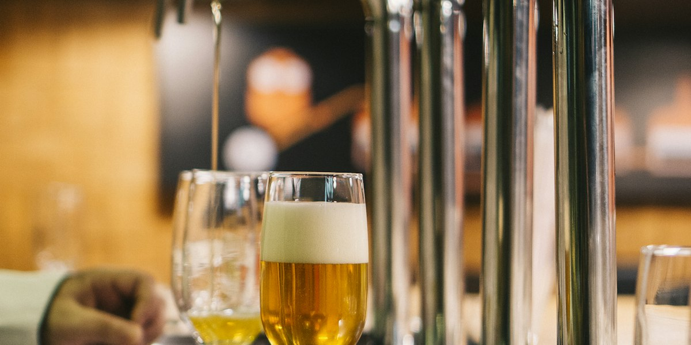
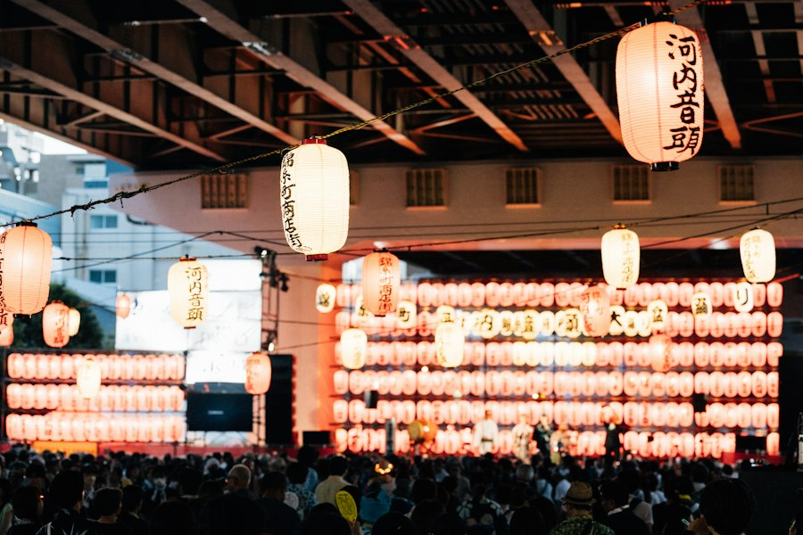
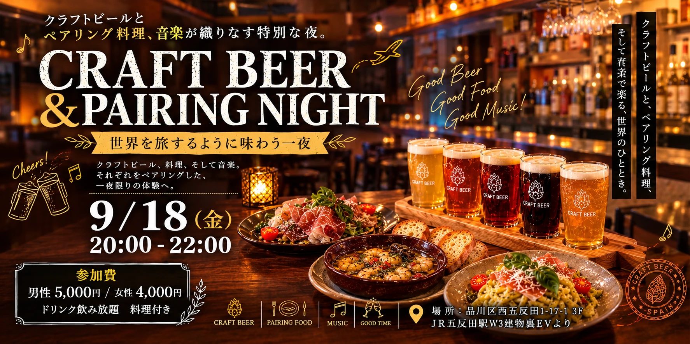
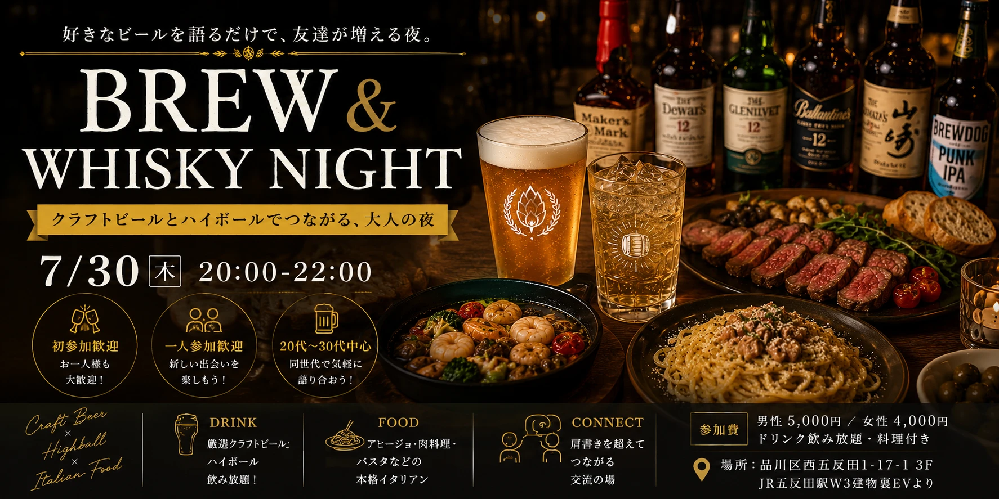

クラフトビール会 × KAIGAN BREWERY
クラフトビールブルワリー「KAIGAN BREWERY」とコラボレーションしたクラフトビール会を開催しました。造り手のこだわりが詰まった一杯を囲みながら、参加者同士が語り合い、新しいつながりが生まれる夜となりました。
- 日時2026年10月23日（金）
- コラボKAIGAN BREWERY
実績・お知らせ

参加者・ピッチ登壇者 募集中
TOKYO INNOVATION HUB
企業・個人・起業家など多様な挑戦者が丸の内に集い、ピッチと交流を通じて新しい協業や事業の可能性を探る交流会です。ピッチ登壇者も募集しています。

クラフトビールブルワリー「KAIGAN BREWERY」とコラボレーションしたクラフトビール会を開催しました。造り手のこだわりが詰まった一杯を囲みながら、参加者同士が語り合い、新しいつながりが生まれる夜となりました。


クラフトビール、ペアリング料理、そして音楽。世界を旅するように味わう一夜限りの体験として、それぞれをペアリングした交流イベントを開催しました。

「好きなビールを語るだけで、友達が増える夜」をテーマに、厳選クラフトビールとハイボール、本格イタリアンを囲んで20〜30代を中心に肩書きを超えてつながる交流会を開催しました。
Join Our
Event.
イベントへのお申込み・取材のご依頼はこちらから。